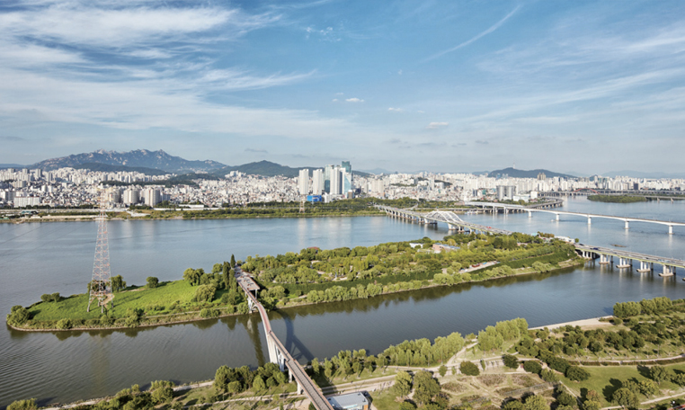
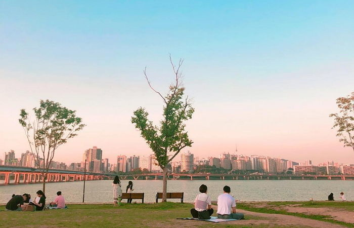
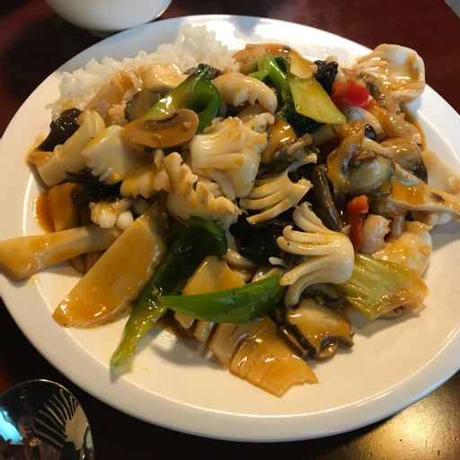

영등포구
경방 타임스퀘어
개요 영등포구의 대규모 복합 쇼핑몰. 구 경방필백화점 + 경방 영등포공장/사옥 부지에 건축되어 2009년 9월 16일 개장했다.
특징 쇼핑과 식사, 여가를 동시에 즐기는 새로운 소비 형태인 '몰링(malling)'의 개념을 제대로 구현했다고 평가받는 복합 쇼핑몰 중 한곳
평점 4.35/5

선유도공원
서울특별시 영등포구 양화동 양화대교와 연결된 섬 선유도에 위치한 시립 공원.
선유도의 과거와 현재를 볼 수 있는 이야기관 15cm이하의 얕은 수심에서 어린이들이 안전하게 물놀이를 즐길 수 있도록 만든 환경계류 2동으로 이루어진 유리 온실이 있으며 그 외 녹색기둥의 정원, 수생식물원, 시간의 정원, 전망대가 있다
평점 4.22/5
서울마리나
서울특별시 영등포구 여의서로 160에 위치한 요트 계류장
서울에서 유일하게 유상 요트투어와 헬기투어가 가능한 복합 레져 시설
평점 4.52/5

63빌딩
서울특별시 영등포구 63로 50 (여의도동)에 위치한 지상 60층 규모의 빌딩
한강의 기적 시대의 산업화를 상징하는 대표적 랜드마크이자 1985년부터 2003년까지 18년간 대한민국 최고층 마천루 자리를 지켜온 빌딩이다
평점 -

여의도한강공원
여의도 강변에 위치해 있는 한강공원
서울의 3대 도심 중 두 곳인 한양도성과 여의도와 인접하고 다른 한강공원들보다 접근성도 편리하기에 한강공원 중 방문자가 압도적으로 제일 많다.
평점 4.32/5
국회의사당
대한민국 국회가 활동하는 건물
모든 국민들의 정치적 의사가 총집되는 '민의의 전당'으로, 나라를 대표하는 상징적 건축물이다
평점 -

씨랄라
서울특별시 영등포구에 있는 워터파크
워터파크에 한국의 가장 친숙한 스파 문화인 찜질방을 더해 워터파크+찜질방+스파 컨셉을 살렸다.
| 워터파크 대인 종일권 (만 13세 이상) | 40,000원 |
| 워터파크 소인 종일권 | 32,000원 |
| 워터파크 대인 오후권 | 29,000원 |
| 워터파크 소인 오후권 | 22,000원 |
| 36개월 미만 | 무료 |
| 사우나 대인 | 8,000원 |
| 사우나 소인 | 7,000원 |
평점 4.22/5

축제
영등포 여의도 봄꽃축제: 매년 4월 초 여의서로 일대에서 개최.
서울세계불꽃축제: 매년 10월 여의도한강공원 개최.
서울밤도깨비야시장 ,여의도 월드나이트마켓: 매년 4월~10월 여의도한강공원 개최.
추천맛집
허브족발
평점 4.6/5
서울특별시 영등포구 당산로48길 6
족발
우미노미
평점 4.6/5
서울특별시 영등포구 당산로 180 신우빌딩 1F6
돈부리 / 일본 카레 / 벤토
대관원
평점 4.5/5
서울특별시 영등포구 당산로37길 1
정통 중식 / 일반 중식
